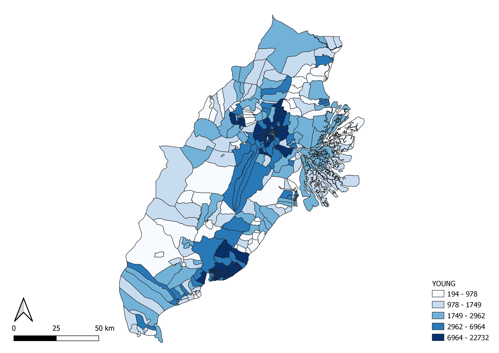
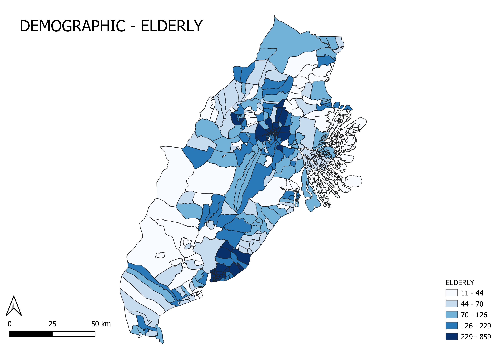
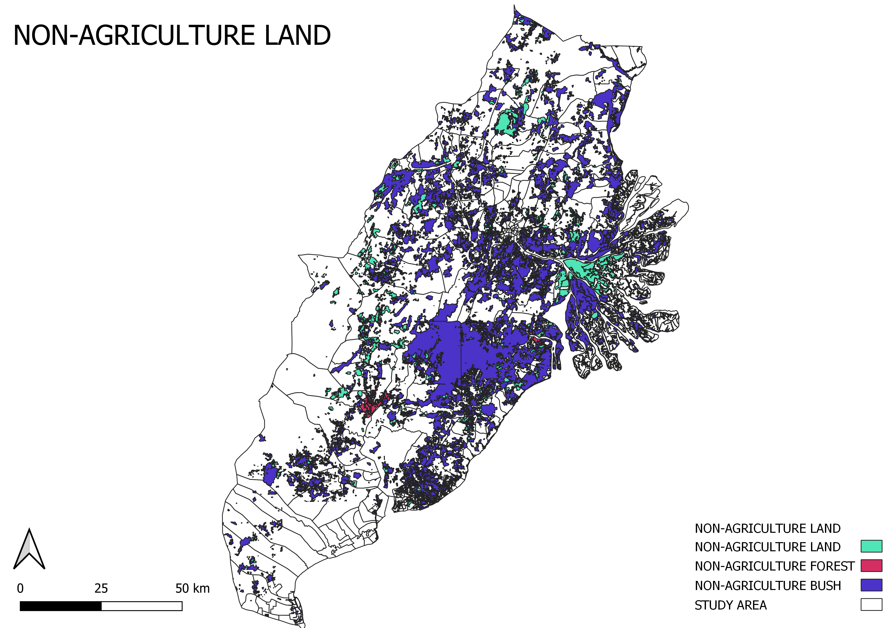
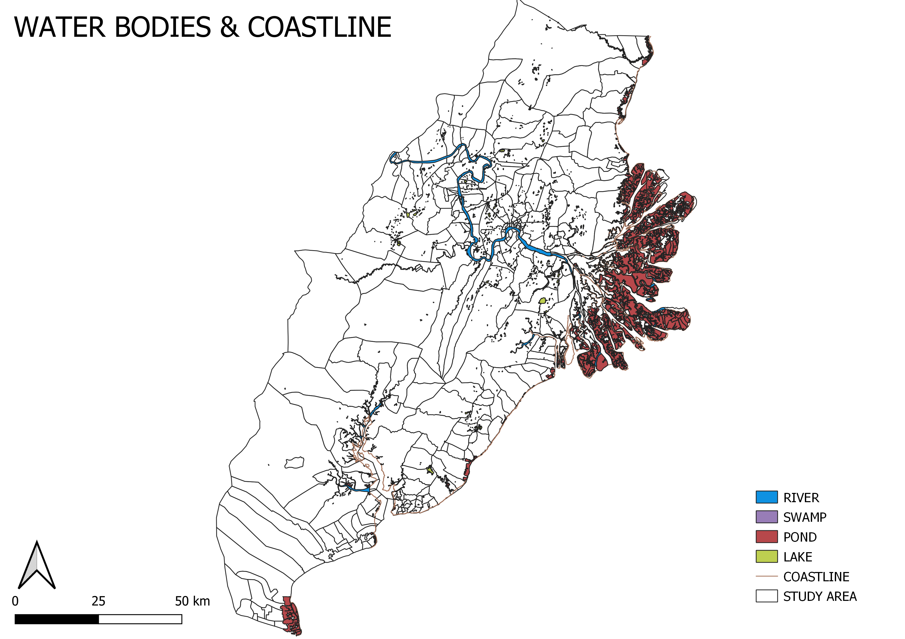
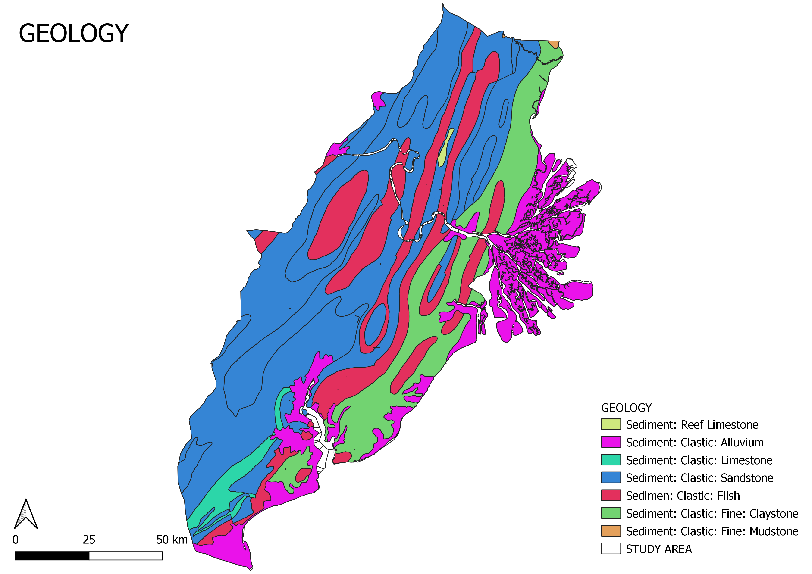
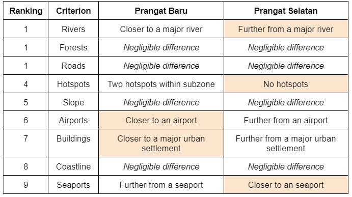
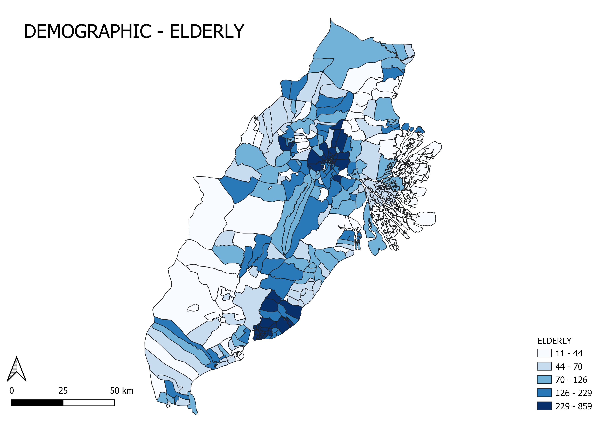
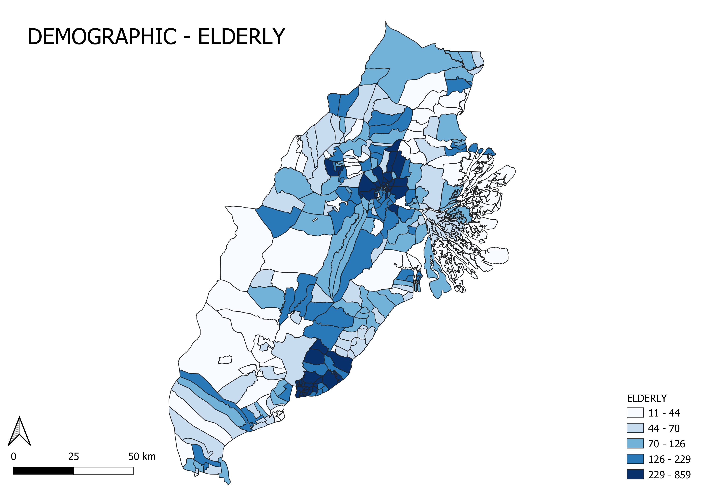

Geographic Information Systems for Urban Planning (SMT201) G1T6
Issues & Problems
Indonesia’s president, Joko Widodo, aims to move the national capital from Jakarta to Kalimantan to address economic inequality and to relieve some of Jakarta’s serious urban problems. However, there have been doubts about whether this relocation plan will solve Jakarta’s problems and concerns surrounding the impact of relocation on Kalimantan.
Motivation
Analyse the current social, economic, and environmental conditions of Kalimantan;
And determine a suitable site, based on the aforementioned three factors, in Kalimantan to relocate the capital.
Approach
Task 1
Obtain East Kalimantan Province as study area
Select and showcase relevant layers for consideration for survey report
Task 2
Rasterize vector layers to be considered for site suitability
Generate proximity maps from the rasterized layer of each component
Standardisation of data using Z-Score to ensure all maps are on the same scale
Use AHP Analysis to obtain the relative weightage of each component
Using the Raster Calculator, compile the different maps of the components into a single output with the multiplication of their Z-scores to their weightage from the AHP Analysis
Only areas with 0.5 as their minimum level to be considered “suitable”
Polygonize current layer into a vector layer, where the subzones within the suitable sites are picked out
Calculate areas of the potential subzone sites
Eliminate subzones not within the required area size (4500-5500 hectares) using select by expression
Compare areas which meet all criteria to be considered a suitable site with the components once more to recommend one final site
Results
This shows the map of the study area, East Kalimantan, broken down into four areas: Kota Balikpapan, Kota Samarinda, Kutai Kartanegara and Penajam Paser Utara.
Population density allows us to determine the extent of an area being overpopulated or unoccupied. Kota Samarinda and Kota Balikpapan experiences the highest population density, with certain zones having a high population density of 2156 - 28047 people per square kilometre.


We split the population of our study area into three groups: young (<= 25 years old), adult who are the economically active group (26 - 65 years old) and elderly (>= 66 years old).The majority of the population of the three age demographics are found in Kota Samarinda and Kota Balikpapan.
The economic and business points are unevenly distributed across the study area. Majority of the economic and business points are concentrated at Kota Samarinda and Kota Balikpapan. The agricultural land is rather evenly distributed across the study area, with the exception of the South of Penajam Paser Utara having a large plot of agricultural land. Regarding the distribution of mining fields, which is East Kalimantan primary source of income, majority of the mining fields are concentrated in Kutai Kartangeara, specifically around the outskirts of Kota Samarinda.
All three transportation terminals, bus terminal, seaports and airports, are found concentrated in and around the outskirts of Kota Samarinda and Kota Balikpapan.Telecommunication points are significantly concentrated in Kota Samarinda.
Infrastructure is unevenly distributed across the study area, with most of the infrastructure concentrated in Kota Samarinda and Kota Balikpapan. Education and public health are the two infrastructures that are the most distributed across the study area.

The predominant non-agriculture greenery is bush in the study area. There are two areas of non-agriculture forest found in the study area, with the smaller and bigger area found towards the East and South of Kutai Kartanegara respectively.

The most significant water body in the study area is the large area of pond at the East of Kutai Kartanegara, followed by the major river that cuts across the width of, from the West to the East of, Kutai Kartanegara and Kota Samarinda.
Forest fire hot spots are found predominantly towards the and are scattered around the North of the study area.

The distribution of geology sediments follows a trend, whereby the primary sediment is sandstone found along the entire West to central of the study area.
There is a series of steep slopes at the South-West region of the study area, reaching peaks of up to 867m which can indicate a mountain range as mountains are landforms that rise above 300m.
The final site we have chosen is Prangat Selatan.
Before performing site selection, we conducted Analytical Hierarchical Process (AHP) analysis to determine which criteria are more important in decision making by quantifying them. We set n = 9 for the number of criterias to be used in our AHP calculation and ranked these criteria at varying importance level based on the fundamental scale, which will be further explained later. The consistency check of 5% is below 10% and the inconsistency is acceptable. With the final calculated AHP scores, each criteria had a different and relevant importance level to the context of relocating Indonesia’s capital, which aid in the process of determining the final suitable site.

We did an in-depth comparison between both subzones based on the 9 criteria to determine the final suitable site for the new capital.The orange highlighted cell indicates a preference of the respective criterion for the corresponding site. Since Prangat Selatan has 3 orange highlighted cells compared to Prangat Baru with 2 orange highlighted cells, Prangat Selatan is a more ideal suitable site for the new capital.
Future Work
In the scope of urban planning, there are many factors to take into consideration. The focus of our project was determining the best suitable site to relocate the capital city of Indonesia to. Despite having implemented a multi-criterion evaluation approach, specifically AHP analysis, to ascertain the varying importance of the 9 factors chosen, to identify a more accurate suitable site, more factors could have been taken into consideration. Not only should more physical and environmental factors be accounted for, but there is a need to involve the various stakeholders: government, businesses and society.


 
